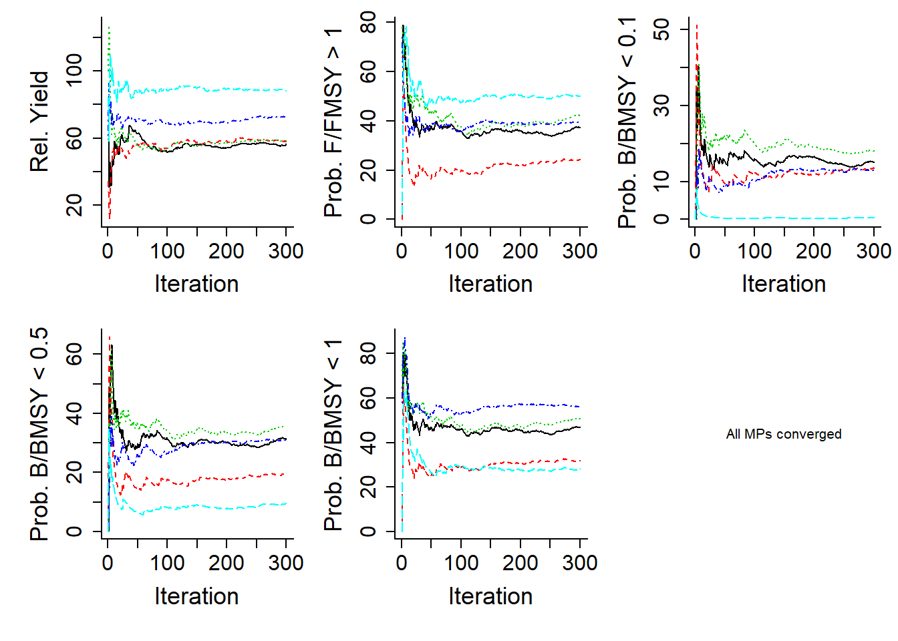

Chapter 6 Management Strategy Evaluation
The last two chapters described how to set up an Operating Model object and to select or develop Management Procedures.
This chapter will describe how to run the Management Strategy Evaluation using the DLMtool
6.1 Re-cap on Setting up DLMtool
Chapter 3 describes the necessary to set up the DLMtool. In brief, the following lines should appear at the top of your script whenever you are using the DLMtool to run a MSE:
library(DLMtool)
setup() 6.2 Defining the Operating Model
The operating model is the ‘simulated reality’: a series of known simulations for testing various data-limited Management Procedures. Operating models can either be specified in detail according to each variable (e.g. sample natural mortality rate between 0.2 and 0.3) or alternatively the user can rapidly construct an operating model based on a set of predefined Stock, Fleet and Observation models. See Chapter 4 for more details on the operating model.
In this case we take the latter approach and pick the Blue_shark stock type, a generic fleet type and an observation model that generates data that can be both imprecise and biased. We will ignore implementation error and use the default Perfect_Imp.
OM <- new('OM', Blue_shark, Generic_Fleet, Imprecise_Biased, Perfect_Imp)6.3 Choose Management Procedures
The MSE can be run either with all of the Management Procedures contained within DLMtool or a subset of methods, for example, only the output control class of methods. As an example, if you wanted to choose four output controls, and one input control method, you would enter the following code. See Chapter 5 for more details on the Management Procedures, including how we created the matlenlim input control method.
MPs <- c("Fratio", "DCAC", "Fdem", "DD", "matlenlim") 6.4 The runMSE Function
The MSE is run using the runMSE function. In addition to the OM (Operating Model) and MPs (Management Procedures) arguments, the RunMSE function has a number of other arguments to control the MSE.
You can access the help file for the runMSE function by typing: ?runMSE into the R console.
6.4.1 Description of the Arguments
Here we briefly describe the arguments for the runMSE function:
OM- An object of classOM. Must be specified, see Chapter 4 for details.MPs- A character vector specifying the Management Procedures to be included in the MSE. If not specified, the DLMtool will run the MSE for all available methods in the Toolkit.nsim- Number of simulations (For backward compatibility only.nsimis now a slot in theOMobject and this argument will be ignored ifnsimis specfied inOM@nsim)proyears- Number of projected years (For backward compatibility only.proyearsis now a slot in theOMobject and this argument will be ignored ifproyearsis specfied inOM@proyears.)interval- The assessment interval - how often would you like to update the management system?pstar- The percentile of the sample of the management recommendation for each methodmaxF- Maximum instantaneous fishing mortality rate that may be simulated for any given age classtimelimit- Maximum time taken for a method to carry out 10 reps (methods are ignored that take longer)reps- The number of samples of the management recommendation for each method. Note that when this is set to 1, the mean value of the data inputs is usedCheckMPs- A logical value to specify if the DLMtool should check if the Management Procedures can be run before running the entire MSE. Mainly used for developing and testing new methods.Hist- Logical - Should model stop after historical simulations? Returns a list containing all data simulated for historical periodntrials- Maximum of times depletion and recruitment deviations are resampled to optimize for depletion.fracD- maximum allowed proportion of simulations where depletion is not close to sampled depletion from OM before model stops with errorCalcBlow- Logical - Should low biomass be calculated where this is the spawning biomass at which it takes HZN mean generation times of zero fishing to reach Bfrac fraction of SSBMSY?HZN- The number of mean generation times required to reach Bfrac SSBMSY in the Blow calculationBfrac- The target fraction of SSBMSY for calculating Blow
6.4.2 Using runMSE
Most of the arguments for the runMSE function have default values. The most important parameters to specify are the Operating Model object, the Management Procedures to include, the number of simulations, the number of projection years, and the interval for management.
Here we will demonstrate running the blue shark operating model that we created above, for the five Management Procedures selected above. Note that in this example we have chosen to include 10 simulations (nsim=10) and left the other parameters at the default values.
OM@nsim <- 10
BSharkMSE <- runMSE(OM=OM, MPs=MPs)## Loading operating model## Note: Maximum age (15) is lower than assuming 1% of cohort survives to maximum age (30)## Optimizing for user-specified movement## Optimizing for user-specified depletion## Calculating historical stock and fishing dynamics## Calculating MSY reference points## Calculating reference yield - best fixed F strategy## 1/5 Running MSE for Fratio## ..................................................## 2/5 Running MSE for DCAC## ..................................................## 3/5 Running MSE for Fdem## ..................................................## 4/5 Running MSE for DD## ..................................................## 5/5 Running MSE for matlenlim## ..................................................Note that this is just a demonstration, in a real MSE you should use many more simulations (nsim more than 200), reps (samples per method more than 100) and perhaps a more frequent assessment interval (interval of 2 or 3 years).
Note that when reps is set to 1, all stochastic MPs use the mean value of an input and do not sample from the distribution according to the specified CV (the Output MPs become deterministic and no longer produce samples of the TAC recommendation).
6.4.3 Robust Wrapper Function
The above example, with 10 simulations and 5 Management Procedures, should take about 17 seconds to complete. A real MSE would include many more simulations and take significantly longer.
The runMSErobust function has been designed as a more efficient way to run the MSE for a large number of simulations. The runMSErobust function splits the MSE into a number of individual packets.
The advantages are that it is more efficient (i.e., quicker), it automatically saves the final MSE object to the hard disk, and re-starts a packet if the MSE model crashes. Furthermore, the individual packets can be saved so if the model crashes, or you suffer a power outage the work is not lost.
It is recommended to use the runMSErobust function if you are running a large number of simulations. However, it is always a good idea to run a small number of simulations first, to test that the MSE is running correctly, and not crashing due to mis-specified parameters or bugs in the Management Procedure code.
The runMSErobust function is essentially a wrapper for the runMSE function and takes the same arguments as runMSE. The runMSErobust function has several additional arguments:
maxsims- The maximum number of simulations to include in each packetname- The file name of the MSE object that is saved to the hard diskunique- Logical - Should the name be unique? Current date and time will be appended to namemaxCrash- The maximum number of consecutive crashes before the MSE stopssaveMSE- A logical value (TRUE/FALSE) to indicate if finalMSEobject should be saved to current working directory (this is probably a good idea)savePack- A logical value (TRUE/FALSE) to indicate if the packets should be save to current working directory
Here we will run the blue shark MSE with 300 simulations. Note that the output is not printed out in the User Manual.
OM@nsim <- 300
BSharkMSE <- runMSErobust(OM=OM, MPs=MPs, name="bluesharkMSE")This run should be completed in 10 minutes or less. The MSE object was saved (using the saveRDS function) to the current working directory as a rdata object named ‘bluesharkMSE.rdata’.
A saved MSE object can be loaded using the readRDS function:
BSharkMSE <- readRDS("bluesharkMSE.rdata")6.5 Checking Convergence
The MSE is now complete. We can use the Converge function to confirm that the number of simulations is sufficient and the MSE model has converged, by which we mean that the relative position of the Management Procedures are stable with respect to different performance metrics:
Converge(BSharkMSE)## All MPs appear to have converged in 300 iterations (threshold = 2%)
6.6 A Quick Recap
The next step is exploring the output of the MSE, and determining which Management Procedure best meets the management objectives.
The information above is spread out over a number of sections and paragraphs, and may appear a little complex. In fact, other than the initial set up of the DLMtool, it only took 4 lines of code to run the MSE and check the model for convergence:
OM <- new('OM', Blue_shark, Generic_Fleet, Imprecise_Biased, nsim=300)
MPs <- c("Fratio", "DCAC", "Fdem", "DD", "matlenlim")
BSharkMSE <- runMSErobust(OM=OM, MPs=MPs, name="bluesharkMSE")
Converge(BSharkMSE)In the next Chapter we will look at how to examine the output of the MSE.